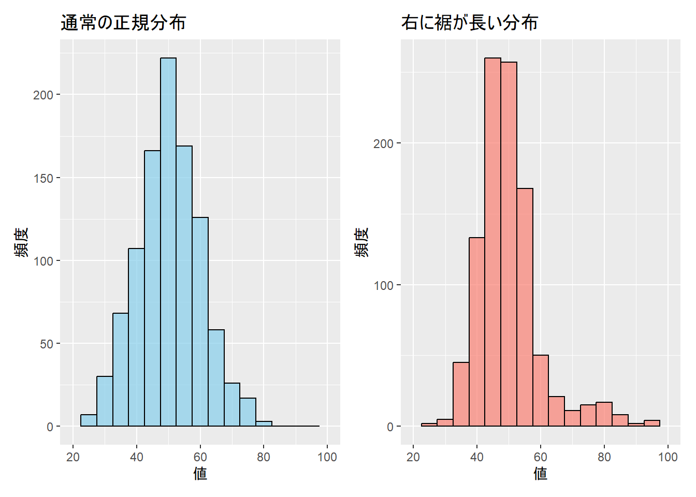
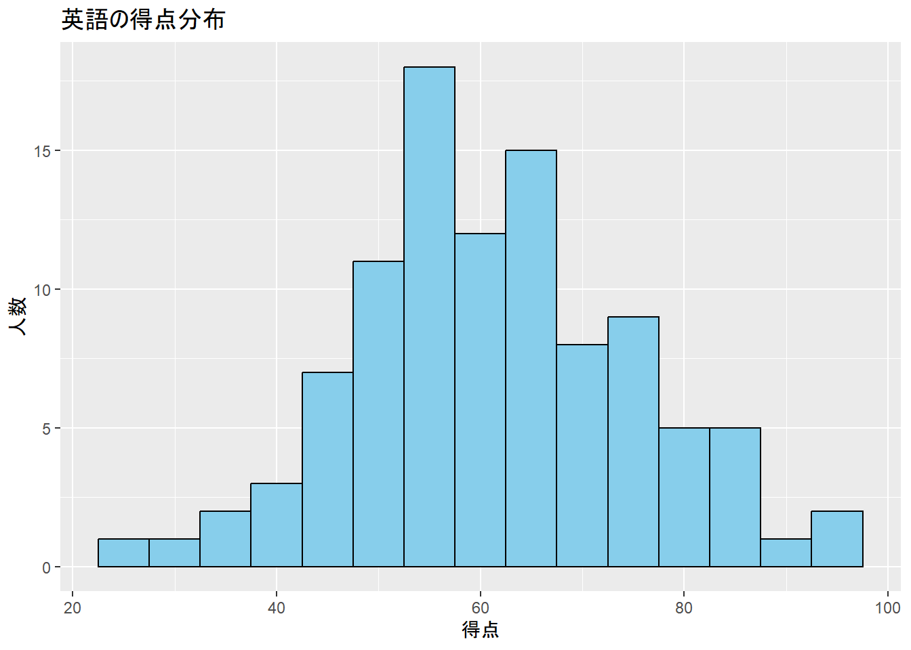

Chapter 4 【タイトルを挿入】
- 不偏分散、不偏推定量あたりの話が抜けている。これを補う必要がある

4.5 確率と確率変数
- 推測統計学では確率が非常に重要な概念。
4.5.2 確率変数と確率分布
4.5.2.1 確率変数（random variable）
確率的に生じる事象に数値を割り当てたもの
- 実際に得られた値のことを確率変数の実現値という
確率変数はスロットマシーンが回っている状態。実現値はスロットマシーンが止まって値が定まった状態をイメージするとよい
4.5.2.2 確率分布（probability distribution）
確率変数の実現値それぞれの生じやすさを確率で表したもの。統計学では、確率変数の実現値を与えると確率を返す関数のことを確率分布という
事象を確率変数として扱うことで、母集団を人の集団ではなく、確率変数の実現値の集合として考えることができる。
- 1万人の学生の集団という母集団が、数値が1万個ある集団と仮定でき、数学的な枠組みとして考えやすくなる（数学の世界に現実世界を映す）。
この場合、母集団の性質を標本に正確に反映させるために、単純無作為抽出（simple random sampling）を行う必要がある。
- 母集団のすべての対象が偏りなく選ばれること（= 無作為に選ぶ）


4.7 区間推定の考え方
4.7.1 母集団分布に確率分布を仮定する
母集団分布が未知の場合、母集団からある値が標本として選ばれる事象の確率が。よく知られた確率分布に従うと仮定する。
統計モデル（statistical model）や確率モデル（probabilistic model）と呼ぶ
よく知られたモデルとして、正規分布（normal distribution）が挙げられる
適切な確率モデルを設定しなければ、そこから算出したデータは正確ではない。
ある程度大きいデータを取り、そのヒストグラムを描画して形状を確認する
データの発生メカニズムから選ぶ
- 例. 反応速度は対数正規分布で近似する、発生確率の低い出来事はポワソン分布に近似する
4.7.2 正規分布の性質
確率分布は形状を決めるパラメータがある。
正規分布のパラメータ：平均（確率分布の位置） + 分散（確率分布の広がり）
- 期待値（Expected value）：確率分布の平均値のこと

- 確率変数が離散的な値をとる場合、確率変数の実現値ろと確率は一対一対応している（例 1か0のデータ）。

- 確率変数が連続的な値をとる場合、実現値の値ではなく、その範囲と確率が対応する。つまり、確率分布の面積が確率と対応する（数値積分をして求めないといけない）。

## 0.3413447 with absolute error < 3.8e-15- 平均値 ± 1.96 × 標準偏差で、標本分布の95%の範囲になる。
- 白い部分は二か所合わせてデータの5%
## [1] 2.055362 - mean(density_data$x) ± 1.96となっているのは、標準偏差が1であるため。
## 0.9489619 with absolute error < 9.2e-124.7.4 正規分布モデルにおける標本平均の標本分布
標準誤差（Standard Error: SE）
- 標本分布の標準偏差
SE=
n = 標本サイズ
- 標本サイズが大きいほど標準誤差は小さくなり、標本平均は母平均に近づく（分母に標本サイズ）
4.7.5 区間推定
点推定（point estimation）：平均値のように1つの値によって母数（母平均など）を推定すること
- 標本サイズがどれだけ大きくても、標本平均は確率的に変動するため、ずばり母数を当てることは難しい
4.7.5.1 信頼区間
区間推定（interval estimation）：区間による推定を行うこと
必ずこの区間に当てはまることは主張できない。そのため、区間推定では、信頼度（degree of confidence）を設定する。これを信頼区間（confidence interval）という。
- 言語研究の分野では95%が一般的
4.7.5.1.1 母分散を事前に知っている場合
標本サイズは25、標本平均99.46、母分散は4を例とする。よって標準誤差は0.4。
「得られた標本統計量が95%の信頼度で否定されない母数の範囲」を考える => 標本平均99.46が95%上限ぎりぎりになるような母数と、95%下限ぎりぎりになるような母数の範囲。上記で扱ったように、面積の95%を塗りつぶすには、平均値から ± 1.96 × 標準偏差すればよい。
下限：99.46 - 1.96 × 0.4 = 98.68
上限：99.46 + 1.96 × 0.4 = 100.24
- 下記の図の赤い点線の内側の範囲が95%信頼区間 
4.7.5.1.2 母分散を知らない場合
母分散が分からない場合の母平均の推定方法を扱う。現実的に、母分散が分かっていることはほとんどない。
母分散が分からない場合、上記の算出法では母平均の区間推定はできない。従って、母分散に依存しない統計量の計算が必要となる
4.7.5.1.2.1 t 値を用いた信頼区間の計算
- t 値：下記の式から算出できる値。t分布に従う。
\[ t = \frac{\bar{x} - \mu}{\frac{u^2}{\sqrt{n}}} \]
t分布には、自由度（degree of freedom）と呼ばれるパラメータがある。t分布の自由度は、標本サイズによって変わる。自由度は、 n - 1で計算できる。
自由度が100くらいになると、標準正規分布（平均0, 標準偏差1の正規分布）と同じような形になる。
母平均が分からない場合、上記のt値を計算することはできない。しかし、母平均の信頼区間を求める場合、t分布の95%の面積にああるような範囲を考えればいい。自由度25の時、上側と下側それぞれ2.5%（5% ÷ 2）となるようなt値を求める（表から値を探したりして値を見つける）。
Rの標準的な関数で求めることも可能
## [1] 2.063899## [1] -2.063899以下の式をもとに算出する
\[ \left( \bar{x} - t_{\alpha/2, \, n-1} \cdot \frac{u^2}{\sqrt{n}}, \quad \bar{x} + t_{\alpha/2, \, n-1} \cdot \frac{u^2}{\sqrt{n}} \right) \]
- u^2は不偏分散であり、以下の式で求められる。自由度25、標準偏差が2.24の場合、nに25、Sに2.24を代入する。しかし、標本サイズが大きいときはほとんど同じ値になるため、実用上標本分散を用いることもある。
\[ s^2 = \frac{1}{n-1}S^2 \]
上限：99.46 + 2.06 * sqrt{}
下限：99.46 - 2.06 * sqrt{}
- 98.52 - 100.40の間に母平均があると推定された
4.8 Rの関数で95%信頼区間を求める
## Warning in ci.numeric(mtcars$mpg): No class or unkown class.
## Using default calcuation.## Estimate CI lower CI upper Std. Error
## 20.090625 17.917679 22.263571 1.065424- 上記の関数と一致した
## [1] 17.91768## [1] 22.2635795%信頼区間は、得られた標本のデータの95%がこの区間に入るという意味ではない。
4.11 次週までの課題
4.12 参考文献
- 心理学統計法 放送大学
- 数値シミュレーションで読み解く統計の仕組み
- 心理統計学の基礎
- https://bellcurve.jp/statistics/course/8972.html?srsltid=AfmBOoo1xtRU_1cwHVoug_u0iB5Cc1yaY23jd7wvOFs_Ub9F26KWqc37